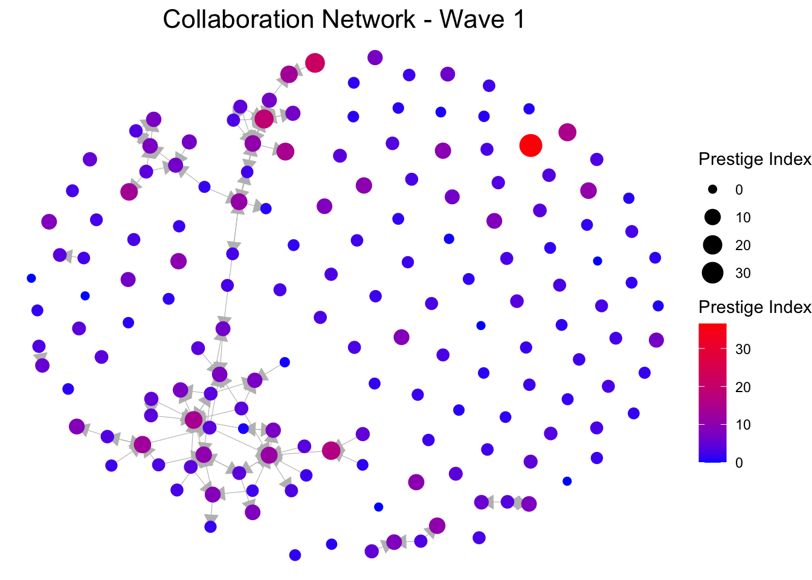
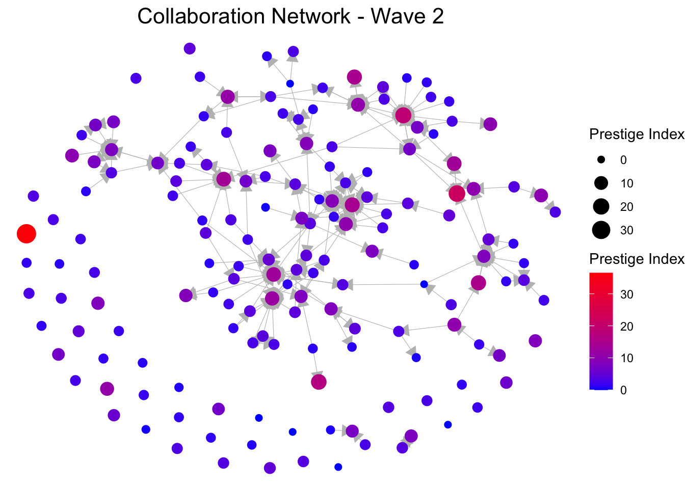
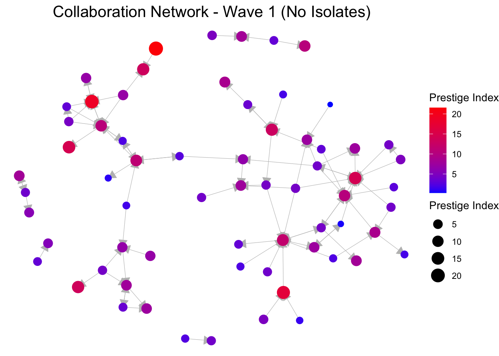
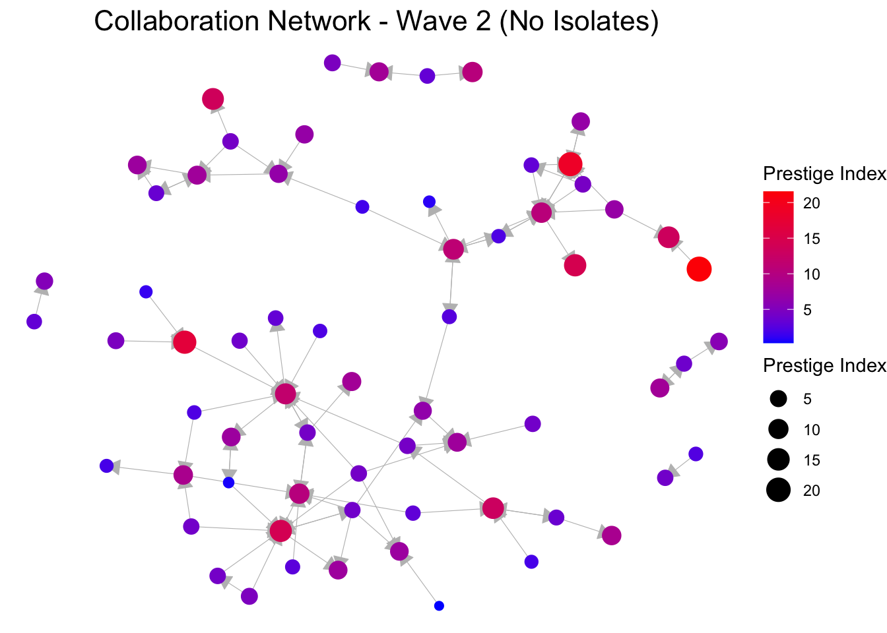

Results
descriptives
To begin the results section, I first present additional descriptive
statistics on the network. Then, I will present some network
visualizations to test H1b and H2. Afterwards, some specific network
statistics are used to test H2 more accurately.
Prep
Cleaning the workspace
rm(list = ls())
Defining the functions
fpackage.check <- function(packages) {
lapply(packages, FUN = function(x) {
if (!require(x, character.only = TRUE)) {
install.packages(x, dependencies = TRUE)
library(x, character.only = TRUE)
}
})
}
fsave <- function(x, file = NULL, location = "./data/processed/") {
ifelse(!dir.exists("data"), dir.create("data"), FALSE)
ifelse(!dir.exists("data/processed"), dir.create("data/processed"), FALSE)
if (is.null(file))
file = deparse(substitute(x))
totalname <- paste(location, file, ".rda", sep = "")
save(x, file = totalname)
}
fload <- function(filename) {
load(filename)
get(ls()[ls() != "filename"])
}
fshowdf <- function(x, ...) {
knitr::kable(x, digits = 2, "html", ...) %>%
kableExtra::kable_styling(bootstrap_options = c("striped", "hover")) %>%
kableExtra::scroll_box(width = "100%", height = "300px")
}
Loading packages
packages <- c("tidyverse", "scholar", "openalexR", "rvest", "jsonlite", "RSiena", "RSelenium", "rvest",
"lavaan", "xml2", "kableExtra", "devtools", "igraph", "network", "sna", "ggraph", "visNetwork", "threejs",
"networkD3", "RsienaTwoStep", "dplyr")
fpackage.check(packages)
#> [[1]]
#> NULL
#>
#> [[2]]
#> NULL
#>
#> [[3]]
#> NULL
#>
#> [[4]]
#> NULL
#>
#> [[5]]
#> NULL
#>
#> [[6]]
#> NULL
#>
#> [[7]]
#> NULL
#>
#> [[8]]
#> NULL
#>
#> [[9]]
#> NULL
#>
#> [[10]]
#> NULL
#>
#> [[11]]
#> NULL
#>
#> [[12]]
#> NULL
#>
#> [[13]]
#> NULL
#>
#> [[14]]
#> NULL
#>
#> [[15]]
#> NULL
#>
#> [[16]]
#> NULL
#>
#> [[17]]
#> NULL
#>
#> [[18]]
#> NULL
#>
#> [[19]]
#> NULL
#>
#> [[20]]
#> NULL
#>
#> [[21]]
#> NULL
# make yourself known to openAlex
options(openalexR.mailto = "lucan.bovens@home.nl")
# Load final prepared data
df_ego <- fload("./data/processed/df_ego_final.rda")
socdata <- fload("./data/processed/socdata_final.rda")
dfworks <- fload("./data/processed/df_works_final.rda")
final_scholar_ids <- df_ego$au_id # Get final scholar IDs from df_ego
socdata$nets <- socdata$nets[, final_scholar_ids, final_scholar_ids, drop = FALSE]
dim(socdata$nets) # Should be 2 (waves) 164, 164)
#> [1] 2 164 164
Network descriptive
statistics
In Wave 1, the network consists of 164 scholars, represented as
nodes. The total amount of ties, or edges, in the network is 91. A dyad
census reveals that these ties consists of 12 mutual ties, better known
as reciprocated ties. These reciprocated ties indicate that both
scholars have asked each other to collaborate. Additionally, there are
67 asymmetric dyads, where only one node has a directed tie to another,
meaning that these ties are not reciprocated. The edge density is 0.003,
which indicates a very sparse network. Only 0.3% of all possible ties
are present in the network, suggesting that most nodes are not directed
to each other. The triad census shows that there are no complete triads.
The high count of empty triads (709166) indicates that the networks
consists mostly of isolates. Finally, the transitivity effect is
considered. Transitivity means that individuals are likely to connect
with the connections of people they are already connected to, resulting
in a triadic closure. An example that is often given is ‘becoming
friends with the friend of a friend’. In other words, if two scholars
have collaborated with a researcher, they themselves may be more likely
to work together. The transitivity index for wave 1 is 0.156, meaning
there is a 15.6% probability that two such scholars will
collaborate.
For Wave 2, the total amount of ties is 209, which is a big increase
compared to the first wave. There are 20 reciprocated ties and 169
asymmetric ties. The edge density has increased to 0.007, meaning that
0.7% of all possible ties are present. There is now one complete triad,
though the network is still largely composed of isolates. The
transitivity index for Wave 2 is 0.192, indicating a 19.2% probability
of collaboration between scholars who share a common collaborator.
# wave 1
networkwave1 <- igraph::graph_from_adjacency_matrix(socdata$nets[1, , ], mode = c("directed"), weighted = NULL,
diag = FALSE, add.colnames = NULL, add.rownames = NULL)
nwave1 <- simplify(networkwave1)
# wave 2
networkwave2 <- igraph::graph_from_adjacency_matrix(socdata$nets[2, , ], mode = c("directed"), weighted = NULL,
diag = FALSE, add.colnames = NULL, add.rownames = NULL)
nwave2 <- simplify(networkwave2)
Wave 1
# Nodes
vcount(networkwave1)
#> [1] 164
# Edges
ecount(networkwave1)
#> [1] 91
# Dyad census
igraph::dyad_census(networkwave1)
#> $mut
#> [1] 12
#>
#> $asym
#> [1] 67
#>
#> $null
#> [1] 13287
# Triad census
igraph::triad_census(networkwave1)
#> [1] 709166 10527 1882 25 60 43 29 17 4 0 4 3 2
#> [14] 1 1 0
# Edge density
igraph::edge_density(networkwave1)
#> [1] 0.00340416
Wave 2
# Nodes
vcount(networkwave2)
#> [1] 164
# Edges
ecount(networkwave2)
#> [1] 209
# Dyad census
igraph::dyad_census(networkwave2)
#> $mut
#> [1] 20
#>
#> $asym
#> [1] 169
#>
#> $null
#> [1] 13177
# Triad census
igraph::triad_census(networkwave2)
#> [1] 691861 26138 3099 78 331 97 90 18 27 0 3 10 4
#> [14] 4 3 1
# Edge density
igraph::edge_density(networkwave2)
#> [1] 0.007818345
Transitivity wave
1
igraph::transitivity(networkwave1)
#> [1] 0.1563981
Transitivity wave
2
igraph::transitivity(networkwave2)
#> [1] 0.1924084
Plots based on
prestige index
The four visualizations below make it possible to test both H1b,
which states “Clusters of scholars with high prestige occur within
collaboration networks,” and H2, which states “Highly prestigious
scholars occupy central positions within collaboration networks”. From
both networks in Wave 1, it does not necessarily seem that scholars with
similar prestige tend to stick together. We observe a mix of different
colors within the network, indicating a mix in different levels of
prestige. Especially in the visualization with isolates excluded, we
find that scholars with a higher level of prestige (red) seem to be
scattered around the network, without any obvious clustering. For both
networks in Wave 2, we observe mostly the same. As can be seen in the
visualization without isolates, it seems that the scholars with the
highest level of prestige are again scattered around the network, with
some not even connected with other highly prestigious scholars. As such,
I believe H1b has to be rejected.
At the same time, in both waves without isolates, we observe that
highly prestigious scholars seem to be surrounded by scholars with lower
levels of prestige. Looking at the direction of the arrows, it appears
that scholars with higher prestige levels tend to receive significantly
more ties from those with lower prestige, rather than lower-prestige
scholars sending ties to each other. Additionally, scholars with higher
levels of prestige seem to receive more ties opposed to them sending out
ties. These findings are especially evident in Wave 2, where we observe
scholars with higher levels of prestige to receive lots of ties and
being surrounded by plenty of scholars with lower levels of prestige.
This provides preliminary support for Hypothesis 2.
Wave 1 based on
prestige
# Assign prestige index as node size
V(networkwave1)$prestige <- df_ego$prestige_index
options(repr.plot.width = 12, repr.plot.height = 8)
ggraph(networkwave1, layout = "fr") + geom_edge_link(color = "grey", width = 0.2, arrow = arrow(type = "closed",
length = unit(3, "mm"))) + geom_node_point(aes(size = prestige, color = prestige)) + scale_size_continuous(range = c(2,
6)) + scale_color_gradient(low = "blue", high = "red") + theme_void() + labs(title = "Collaboration Network - Wave 1",
color = "Prestige Index", size = "Prestige Index") + theme(plot.title = element_text(size = 16, hjust = 0.5))

Wave 2 based on
prestige
V(networkwave2)$prestige <- df_ego$prestige_index
ggraph(networkwave2, layout = "fr") + geom_edge_link(color = "grey", width = 0.2, arrow = arrow(type = "closed",
length = unit(3, "mm"))) + geom_node_point(aes(size = prestige, color = prestige)) + scale_size_continuous(range = c(2,
6)) + scale_color_gradient(low = "blue", high = "red") + theme_void() + labs(title = "Collaboration Network - Wave 2",
color = "Prestige Index", size = "Prestige Index") + theme(plot.title = element_text(size = 16, hjust = 0.5))

Wave 1 based on
prestige, no isolates
networkwave1_no_iso <- delete_vertices(networkwave1, igraph::degree(networkwave1) == 0)
ggraph(networkwave1_no_iso, layout = "fr") + geom_edge_link(color = "grey", width = 0.2, arrow = arrow(type = "closed",
length = unit(3, "mm"))) + geom_node_point(aes(size = prestige, color = prestige)) + scale_size_continuous(range = c(2,
6)) + scale_color_gradient(low = "blue", high = "red") + theme_void() + labs(title = "Collaboration Network - Wave 1 (No Isolates)",
color = "Prestige Index", size = "Prestige Index") + theme(plot.title = element_text(size = 16, hjust = 0.5))

Wave 2 based on
prestige, no isolates
networkwave2_no_iso <- delete_vertices(networkwave1, igraph::degree(networkwave1) == 0)
ggraph(networkwave2_no_iso, layout = "fr") + geom_edge_link(color = "grey", width = 0.2, arrow = arrow(type = "closed",
length = unit(3, "mm"))) + geom_node_point(aes(size = prestige, color = prestige)) + scale_size_continuous(range = c(2,
6)) + scale_color_gradient(low = "blue", high = "red") + theme_void() + labs(title = "Collaboration Network - Wave 2 (No Isolates)",
color = "Prestige Index", size = "Prestige Index") + theme(plot.title = element_text(size = 16, hjust = 0.5))

Network
statistics
To further test the second hypothesis, I used degree centrality as
the centrality measure. Degree centrality examines the number of direct
ties of a node; in this directed network, it specifically reflects the
number of indegrees, the received ties, a scholar has. For Wave 1, the
Spearman’s correlation coefficient of 0.49 suggest a moderate positive
relationship between in-degree centrality and prestige. The p-value,
which is below the 0.05 threshold, shows that the effect is significant.
This indicates that as scholars have higher prestige, they tend to have
more in-degrees as well. For wave 2, the Spearman’s coefficient is even
higher at 0.58, meaning there is a strong positive relationship between
in-degree and prestige. The association has thus increased over time.
The p-value remains the same, showing that prestige indeed is associated
with receiving more ties, and thus occupying central positions in the
network. Thus, Hypothesis 2 is supported. The other hypotheses will be
tested in the next section.
Degree
centrality
# Wave 1 (indegree)
degrees_nw1 <- igraph::degree(networkwave1, mode = c("in"), normalized = FALSE)
degrees_nw1 <- (degrees_nw1 - min(degrees_nw1))/(max(degrees_nw1) - min(degrees_nw1)) #normalised degree centrality
cor.test(degrees_nw1, df_ego$prestige_index, method = "spearman")
#>
#> Spearman's rank correlation rho
#>
#> data: degrees_nw1 and df_ego$prestige_index
#> S = 377201, p-value = 3.824e-11
#> alternative hypothesis: true rho is not equal to 0
#> sample estimates:
#> rho
#> 0.486892
# Wave 2 (indegree)
degrees_nw2 <- igraph::degree(networkwave2, mode = c("in"), normalized = FALSE)
degrees_nw2 <- (degrees_nw2 - min(degrees_nw2))/(max(degrees_nw2) - min(degrees_nw2))
cor.test(degrees_nw2, df_ego$prestige_index, method = "spearman")
#>
#> Spearman's rank correlation rho
#>
#> data: degrees_nw2 and df_ego$prestige_index
#> S = 307502, p-value = 3.134e-16
#> alternative hypothesis: true rho is not equal to 0
#> sample estimates:
#> rho
#> 0.5817039
View(df_ego)
LS0tCnRpdGxlOiAiUmVzdWx0IGRlc2NyaXB0aXZlcyIKb3V0cHV0OiBodG1sX2RvY3VtZW50CmRhdGU6ICIyMDI0LTEwLTMxIgpiaWJsaW9ncmFwaHk6IHJlZmVyZW5jZXMuYmliCmF1dGhvcjogIkx1Y2FuIEJvdmVucyIKLS0tCgpgYGB7PWh0bWx9CjxzdHlsZT4KZGl2IHsKdGV4dC1hbGlnbjoganVzdGlmeX0KPC9zdHlsZT4KYGBgCiAgCmBgYHtyLCBnbG9iYWxzZXR0aW5ncywgZWNobz1GQUxTRSwgd2FybmluZz1GQUxTRSwgcmVzdWx0cz0naGlkZSd9CmxpYnJhcnkoa25pdHIpCgprbml0cjo6b3B0c19jaHVuayRzZXQoZWNobyA9IFRSVUUpCm9wdHNfY2h1bmskc2V0KHRpZHkub3B0cz1saXN0KHdpZHRoLmN1dG9mZj0xMDApLHRpZHk9VFJVRSwgd2FybmluZyA9IEZBTFNFLCBtZXNzYWdlID0gRkFMU0UsY29tbWVudCA9ICIjPiIsIGNhY2hlPVRSVUUsIGNsYXNzLnNvdXJjZT1jKCJ0ZXN0IiksIGNsYXNzLm91dHB1dD1jKCJ0ZXN0MiIpKQpvcHRpb25zKHdpZHRoID0gMTAwKQpyZ2w6OnNldHVwS25pdHIoKQoKY29sb3JpemUgPC0gZnVuY3Rpb24oeCwgY29sb3IpIHtzcHJpbnRmKCI8c3BhbiBzdHlsZT0nY29sb3I6ICVzOyc+JXM8L3NwYW4+IiwgY29sb3IsIHgpIH0KYGBgCgpgYGB7ciBrbGlwcHksIGVjaG89RkFMU0UsIGluY2x1ZGU9VFJVRX0Ka2xpcHB5OjprbGlwcHkocG9zaXRpb24gPSBjKCd0b3AnLCAncmlnaHQnKSkKI2tsaXBweTo6a2xpcHB5KGNvbG9yID0gJ2RhcmtyZWQnKQoja2xpcHB5OjprbGlwcHkodG9vbHRpcF9tZXNzYWdlID0gJ0NsaWNrIHRvIGNvcHknLCB0b29sdGlwX3N1Y2Nlc3MgPSAnRG9uZScpCmBgYAoKYGBge3Igc2V0dXAsIGluY2x1ZGU9RkFMU0V9CmtuaXRyOjpvcHRzX2NodW5rJHNldChlY2hvID0gVFJVRSkKYGBgCi0tLS0KCiMgUmVzdWx0cyBkZXNjcmlwdGl2ZXMKClRvIGJlZ2luIHRoZSByZXN1bHRzIHNlY3Rpb24sIEkgZmlyc3QgcHJlc2VudCBhZGRpdGlvbmFsIGRlc2NyaXB0aXZlIHN0YXRpc3RpY3Mgb24gdGhlIG5ldHdvcmsuIFRoZW4sIEkgd2lsbCBwcmVzZW50IHNvbWUgbmV0d29yayB2aXN1YWxpemF0aW9ucyB0byB0ZXN0IEgxYiBhbmQgSDIuIEFmdGVyd2FyZHMsIHNvbWUgc3BlY2lmaWMgbmV0d29yayBzdGF0aXN0aWNzIGFyZSB1c2VkIHRvIHRlc3QgSDIgbW9yZSBhY2N1cmF0ZWx5LiAKICAKLS0tLQogIAojIyBQcmVwCgpDbGVhbmluZyB0aGUgd29ya3NwYWNlCgpgYGB7cn0Kcm0obGlzdD1scygpKQpgYGAKCkRlZmluaW5nIHRoZSBmdW5jdGlvbnMKCmBgYHtyfQpmcGFja2FnZS5jaGVjayA8LSBmdW5jdGlvbihwYWNrYWdlcykgewogICAgbGFwcGx5KHBhY2thZ2VzLCBGVU4gPSBmdW5jdGlvbih4KSB7CiAgICAgICAgaWYgKCFyZXF1aXJlKHgsIGNoYXJhY3Rlci5vbmx5ID0gVFJVRSkpIHsKICAgICAgICAgICAgaW5zdGFsbC5wYWNrYWdlcyh4LCBkZXBlbmRlbmNpZXMgPSBUUlVFKQogICAgICAgICAgICBsaWJyYXJ5KHgsIGNoYXJhY3Rlci5vbmx5ID0gVFJVRSkKICAgICAgICB9CiAgICB9KQp9Cgpmc2F2ZSA8LSBmdW5jdGlvbih4LCBmaWxlID0gTlVMTCwgbG9jYXRpb24gPSAiLi9kYXRhL3Byb2Nlc3NlZC8iKSB7CiAgICBpZmVsc2UoIWRpci5leGlzdHMoImRhdGEiKSwgZGlyLmNyZWF0ZSgiZGF0YSIpLCBGQUxTRSkKICAgIGlmZWxzZSghZGlyLmV4aXN0cygiZGF0YS9wcm9jZXNzZWQiKSwgZGlyLmNyZWF0ZSgiZGF0YS9wcm9jZXNzZWQiKSwgRkFMU0UpCiAgICBpZiAoaXMubnVsbChmaWxlKSkKICAgICAgICBmaWxlID0gZGVwYXJzZShzdWJzdGl0dXRlKHgpKQogICAgdG90YWxuYW1lIDwtIHBhc3RlKGxvY2F0aW9uLCBmaWxlLCAiLnJkYSIsIHNlcCA9ICIiKQogICAgc2F2ZSh4LCBmaWxlID0gdG90YWxuYW1lKQp9CgoKZmxvYWQgPC0gZnVuY3Rpb24oZmlsZW5hbWUpIHsKICAgIGxvYWQoZmlsZW5hbWUpCiAgICBnZXQobHMoKVtscygpICE9ICJmaWxlbmFtZSJdKQp9Cgpmc2hvd2RmIDwtIGZ1bmN0aW9uKHgsIC4uLikgewogICAga25pdHI6OmthYmxlKHgsIGRpZ2l0cyA9IDIsICJodG1sIiwgLi4uKSAlPiUKICAgICAgICBrYWJsZUV4dHJhOjprYWJsZV9zdHlsaW5nKGJvb3RzdHJhcF9vcHRpb25zID0gYygic3RyaXBlZCIsICJob3ZlciIpKSAlPiUKICAgICAgICBrYWJsZUV4dHJhOjpzY3JvbGxfYm94KHdpZHRoID0gIjEwMCUiLCBoZWlnaHQgPSAiMzAwcHgiKQp9CmBgYAoKTG9hZGluZyBwYWNrYWdlcwoKYGBge3J9CnBhY2thZ2VzIDwtIGMoInRpZHl2ZXJzZSIsICJzY2hvbGFyIiwgIm9wZW5hbGV4UiIsICJydmVzdCIsICJqc29ubGl0ZSIsICJSU2llbmEiLCAiUlNlbGVuaXVtIiwgInJ2ZXN0IiwgImxhdmFhbiIsICJ4bWwyIiwgImthYmxlRXh0cmEiLCAiZGV2dG9vbHMiLCAiaWdyYXBoIiwgIm5ldHdvcmsiLCAic25hIiwgImdncmFwaCIsICJ2aXNOZXR3b3JrIiwgInRocmVlanMiLCAibmV0d29ya0QzIiwgIlJzaWVuYVR3b1N0ZXAiLCAiZHBseXIiKQoKCmZwYWNrYWdlLmNoZWNrKHBhY2thZ2VzKQpgYGAKCmBgYHtyfQojIG1ha2UgeW91cnNlbGYga25vd24gdG8gb3BlbkFsZXgKb3B0aW9ucyhvcGVuYWxleFIubWFpbHRvID0gImx1Y2FuLmJvdmVuc0Bob21lLm5sIikKYGBgCgpgYGB7cn0KIyBMb2FkIGZpbmFsIHByZXBhcmVkIGRhdGEKZGZfZWdvIDwtIGZsb2FkKCIuL2RhdGEvcHJvY2Vzc2VkL2RmX2Vnb19maW5hbC5yZGEiKQpzb2NkYXRhIDwtIGZsb2FkKCIuL2RhdGEvcHJvY2Vzc2VkL3NvY2RhdGFfZmluYWwucmRhIikKZGZ3b3JrcyA8LSBmbG9hZCgiLi9kYXRhL3Byb2Nlc3NlZC9kZl93b3Jrc19maW5hbC5yZGEiKQpgYGAKCmBgYHtyfQpmaW5hbF9zY2hvbGFyX2lkcyA8LSBkZl9lZ28kYXVfaWQgICMgR2V0IGZpbmFsIHNjaG9sYXIgSURzIGZyb20gZGZfZWdvCnNvY2RhdGEkbmV0cyA8LSBzb2NkYXRhJG5ldHNbLCBmaW5hbF9zY2hvbGFyX2lkcywgZmluYWxfc2Nob2xhcl9pZHMsIGRyb3AgPSBGQUxTRV0KZGltKHNvY2RhdGEkbmV0cykgICMgU2hvdWxkIGJlIDIgKHdhdmVzKSAxNjQsIDE2NCkKYGBgCgojIyBOZXR3b3JrIGRlc2NyaXB0aXZlIHN0YXRpc3RpY3MKCkluIFdhdmUgMSwgdGhlIG5ldHdvcmsgY29uc2lzdHMgb2YgMTY0IHNjaG9sYXJzLCByZXByZXNlbnRlZCBhcyBub2Rlcy4gVGhlIHRvdGFsIGFtb3VudCBvZiB0aWVzLCBvciBlZGdlcywgaW4gdGhlIG5ldHdvcmsgaXMgOTEuIEEgZHlhZCBjZW5zdXMgcmV2ZWFscyB0aGF0IHRoZXNlIHRpZXMgY29uc2lzdHMgb2YgMTIgbXV0dWFsIHRpZXMsIGJldHRlciBrbm93biBhcyByZWNpcHJvY2F0ZWQgdGllcy4gVGhlc2UgcmVjaXByb2NhdGVkIHRpZXMgaW5kaWNhdGUgdGhhdCBib3RoIHNjaG9sYXJzIGhhdmUgYXNrZWQgZWFjaCBvdGhlciB0byBjb2xsYWJvcmF0ZS4gQWRkaXRpb25hbGx5LCB0aGVyZSBhcmUgNjcgYXN5bW1ldHJpYyBkeWFkcywgd2hlcmUgb25seSBvbmUgbm9kZSBoYXMgYSBkaXJlY3RlZCB0aWUgdG8gYW5vdGhlciwgbWVhbmluZyB0aGF0IHRoZXNlIHRpZXMgYXJlIG5vdCByZWNpcHJvY2F0ZWQuIFRoZSBlZGdlIGRlbnNpdHkgaXMgMC4wMDMsIHdoaWNoIGluZGljYXRlcyBhIHZlcnkgc3BhcnNlIG5ldHdvcmsuIE9ubHkgMC4zJSBvZiBhbGwgcG9zc2libGUgdGllcyBhcmUgcHJlc2VudCBpbiB0aGUgbmV0d29yaywgc3VnZ2VzdGluZyB0aGF0IG1vc3Qgbm9kZXMgYXJlIG5vdCBkaXJlY3RlZCB0byBlYWNoIG90aGVyLiBUaGUgdHJpYWQgY2Vuc3VzIHNob3dzIHRoYXQgdGhlcmUgYXJlIG5vIGNvbXBsZXRlIHRyaWFkcy4gVGhlIGhpZ2ggY291bnQgb2YgZW1wdHkgdHJpYWRzICg3MDkxNjYpIGluZGljYXRlcyB0aGF0IHRoZSBuZXR3b3JrcyBjb25zaXN0cyBtb3N0bHkgb2YgaXNvbGF0ZXMuIEZpbmFsbHksIHRoZSB0cmFuc2l0aXZpdHkgZWZmZWN0IGlzIGNvbnNpZGVyZWQuIFRyYW5zaXRpdml0eSBtZWFucyB0aGF0IGluZGl2aWR1YWxzIGFyZSBsaWtlbHkgdG8gY29ubmVjdCB3aXRoIHRoZSBjb25uZWN0aW9ucyBvZiBwZW9wbGUgdGhleSBhcmUgYWxyZWFkeSBjb25uZWN0ZWQgdG8sIHJlc3VsdGluZyBpbiBhIHRyaWFkaWMgY2xvc3VyZS4gQW4gZXhhbXBsZSB0aGF0IGlzIG9mdGVuIGdpdmVuIGlzICdiZWNvbWluZyBmcmllbmRzIHdpdGggdGhlIGZyaWVuZCBvZiBhIGZyaWVuZCcuIEluIG90aGVyIHdvcmRzLCBpZiB0d28gc2Nob2xhcnMgaGF2ZSBjb2xsYWJvcmF0ZWQgd2l0aCBhIHJlc2VhcmNoZXIsIHRoZXkgdGhlbXNlbHZlcyBtYXkgYmUgbW9yZSBsaWtlbHkgdG8gd29yayB0b2dldGhlci4gVGhlIHRyYW5zaXRpdml0eSBpbmRleCBmb3Igd2F2ZSAxIGlzIDAuMTU2LCBtZWFuaW5nIHRoZXJlIGlzIGEgMTUuNiUgcHJvYmFiaWxpdHkgdGhhdCB0d28gc3VjaCBzY2hvbGFycyB3aWxsIGNvbGxhYm9yYXRlLiBcCuKAgyBGb3IgV2F2ZSAyLCB0aGUgdG90YWwgYW1vdW50IG9mIHRpZXMgaXMgMjA5LCB3aGljaCBpcyBhIGJpZyBpbmNyZWFzZSBjb21wYXJlZCB0byB0aGUgZmlyc3Qgd2F2ZS4gVGhlcmUgYXJlIDIwIHJlY2lwcm9jYXRlZCB0aWVzIGFuZCAxNjkgYXN5bW1ldHJpYyB0aWVzLiBUaGUgZWRnZSBkZW5zaXR5IGhhcyBpbmNyZWFzZWQgdG8gMC4wMDcsIG1lYW5pbmcgdGhhdCAwLjclIG9mIGFsbCBwb3NzaWJsZSB0aWVzIGFyZSBwcmVzZW50LiBUaGVyZSBpcyBub3cgb25lIGNvbXBsZXRlIHRyaWFkLCB0aG91Z2ggdGhlIG5ldHdvcmsgaXMgc3RpbGwgbGFyZ2VseSBjb21wb3NlZCBvZiBpc29sYXRlcy4gVGhlIHRyYW5zaXRpdml0eSBpbmRleCBmb3IgV2F2ZSAyIGlzIDAuMTkyLCBpbmRpY2F0aW5nIGEgMTkuMiUgcHJvYmFiaWxpdHkgb2YgY29sbGFib3JhdGlvbiBiZXR3ZWVuIHNjaG9sYXJzIHdobyBzaGFyZSBhIGNvbW1vbiBjb2xsYWJvcmF0b3IuCgpgYGB7cn0KIyB3YXZlIDEKbmV0d29ya3dhdmUxIDwtIGlncmFwaDo6Z3JhcGhfZnJvbV9hZGphY2VuY3lfbWF0cml4KAogIHNvY2RhdGEkbmV0c1sxLCxdLAogIG1vZGUgPSBjKCJkaXJlY3RlZCIpLAogIHdlaWdodGVkID0gTlVMTCwKICBkaWFnID0gRkFMU0UsCiAgYWRkLmNvbG5hbWVzID0gTlVMTCwKICBhZGQucm93bmFtZXMgPSBOVUxMKQoKbndhdmUxIDwtIHNpbXBsaWZ5KG5ldHdvcmt3YXZlMSkKCiMgd2F2ZSAyCm5ldHdvcmt3YXZlMiA8LSBpZ3JhcGg6OmdyYXBoX2Zyb21fYWRqYWNlbmN5X21hdHJpeCgKICBzb2NkYXRhJG5ldHNbMiwsXSwKICBtb2RlID0gYygiZGlyZWN0ZWQiKSwKICB3ZWlnaHRlZCA9IE5VTEwsCiAgZGlhZyA9IEZBTFNFLAogIGFkZC5jb2xuYW1lcyA9IE5VTEwsCiAgYWRkLnJvd25hbWVzID0gTlVMTCkKCm53YXZlMiA8LSBzaW1wbGlmeShuZXR3b3Jrd2F2ZTIpCmBgYAoKIyMjIFdhdmUgMQoKYGBge3J9CiMgTm9kZXMKdmNvdW50KG5ldHdvcmt3YXZlMSkKCiMgRWRnZXMKZWNvdW50KG5ldHdvcmt3YXZlMSkKCiNEeWFkIGNlbnN1cwppZ3JhcGg6OmR5YWRfY2Vuc3VzKG5ldHdvcmt3YXZlMSkKCiMgVHJpYWQgY2Vuc3VzCmlncmFwaDo6dHJpYWRfY2Vuc3VzKG5ldHdvcmt3YXZlMSkKCiNFZGdlIGRlbnNpdHkKaWdyYXBoOjplZGdlX2RlbnNpdHkobmV0d29ya3dhdmUxKQpgYGAKCiMjIyBXYXZlIDIKCmBgYHtyfQojIE5vZGVzCnZjb3VudChuZXR3b3Jrd2F2ZTIpCgojIEVkZ2VzCmVjb3VudChuZXR3b3Jrd2F2ZTIpCgojRHlhZCBjZW5zdXMKaWdyYXBoOjpkeWFkX2NlbnN1cyhuZXR3b3Jrd2F2ZTIpCgojIFRyaWFkIGNlbnN1cwppZ3JhcGg6OnRyaWFkX2NlbnN1cyhuZXR3b3Jrd2F2ZTIpCgojRWRnZSBkZW5zaXR5CmlncmFwaDo6ZWRnZV9kZW5zaXR5KG5ldHdvcmt3YXZlMikKYGBgCgojIyMgVHJhbnNpdGl2aXR5IHdhdmUgMQoKYGBge3J9CmlncmFwaDo6dHJhbnNpdGl2aXR5KG5ldHdvcmt3YXZlMSkKYGBgCgojIyMgVHJhbnNpdGl2aXR5IHdhdmUgMgoKYGBge3J9CmlncmFwaDo6dHJhbnNpdGl2aXR5KG5ldHdvcmt3YXZlMikKYGBgCgoKIyMgUGxvdHMgYmFzZWQgb24gcHJlc3RpZ2UgaW5kZXgKClRoZSBmb3VyIHZpc3VhbGl6YXRpb25zIGJlbG93IG1ha2UgaXQgcG9zc2libGUgdG8gdGVzdCBib3RoIEgxYiwgd2hpY2ggc3RhdGVzICJDbHVzdGVycyBvZiBzY2hvbGFycyB3aXRoIGhpZ2ggcHJlc3RpZ2Ugb2NjdXIgd2l0aGluIGNvbGxhYm9yYXRpb24gbmV0d29ya3MsIiBhbmQgSDIsIHdoaWNoIHN0YXRlcyAiSGlnaGx5IHByZXN0aWdpb3VzIHNjaG9sYXJzIG9jY3VweSBjZW50cmFsIHBvc2l0aW9ucyB3aXRoaW4gY29sbGFib3JhdGlvbiBuZXR3b3JrcyIuIEZyb20gYm90aCBuZXR3b3JrcyBpbiBXYXZlIDEsIGl0IGRvZXMgbm90IG5lY2Vzc2FyaWx5IHNlZW0gdGhhdCBzY2hvbGFycyB3aXRoIHNpbWlsYXIgcHJlc3RpZ2UgdGVuZCB0byBzdGljayB0b2dldGhlci4gV2Ugb2JzZXJ2ZSBhIG1peCBvZiBkaWZmZXJlbnQgY29sb3JzIHdpdGhpbiB0aGUgbmV0d29yaywgaW5kaWNhdGluZyBhIG1peCBpbiBkaWZmZXJlbnQgbGV2ZWxzIG9mIHByZXN0aWdlLiBFc3BlY2lhbGx5IGluIHRoZSB2aXN1YWxpemF0aW9uIHdpdGggaXNvbGF0ZXMgZXhjbHVkZWQsIHdlIGZpbmQgdGhhdCBzY2hvbGFycyB3aXRoIGEgaGlnaGVyIGxldmVsIG9mIHByZXN0aWdlIChyZWQpIHNlZW0gdG8gYmUgc2NhdHRlcmVkIGFyb3VuZCB0aGUgbmV0d29yaywgd2l0aG91dCBhbnkgb2J2aW91cyBjbHVzdGVyaW5nLiBGb3IgYm90aCBuZXR3b3JrcyBpbiBXYXZlIDIsIHdlIG9ic2VydmUgbW9zdGx5IHRoZSBzYW1lLiBBcyBjYW4gYmUgc2VlbiBpbiB0aGUgdmlzdWFsaXphdGlvbiB3aXRob3V0IGlzb2xhdGVzLCBpdCBzZWVtcyB0aGF0IHRoZSBzY2hvbGFycyB3aXRoIHRoZSBoaWdoZXN0IGxldmVsIG9mIHByZXN0aWdlIGFyZSBhZ2FpbiBzY2F0dGVyZWQgYXJvdW5kIHRoZSBuZXR3b3JrLCB3aXRoIHNvbWUgbm90IGV2ZW4gY29ubmVjdGVkIHdpdGggb3RoZXIgaGlnaGx5IHByZXN0aWdpb3VzIHNjaG9sYXJzLiBBcyBzdWNoLCBJIGJlbGlldmUgSDFiIGhhcyB0byBiZSByZWplY3RlZC4gXArigIMgIEF0IHRoZSBzYW1lIHRpbWUsIGluIGJvdGggd2F2ZXMgd2l0aG91dCBpc29sYXRlcywgd2Ugb2JzZXJ2ZSB0aGF0IGhpZ2hseSBwcmVzdGlnaW91cyBzY2hvbGFycyBzZWVtIHRvIGJlIHN1cnJvdW5kZWQgYnkgc2Nob2xhcnMgd2l0aCBsb3dlciBsZXZlbHMgb2YgcHJlc3RpZ2UuIExvb2tpbmcgYXQgdGhlIGRpcmVjdGlvbiBvZiB0aGUgYXJyb3dzLCBpdCBhcHBlYXJzIHRoYXQgc2Nob2xhcnMgd2l0aCBoaWdoZXIgcHJlc3RpZ2UgbGV2ZWxzIHRlbmQgdG8gcmVjZWl2ZSBzaWduaWZpY2FudGx5IG1vcmUgdGllcyBmcm9tIHRob3NlIHdpdGggbG93ZXIgcHJlc3RpZ2UsIHJhdGhlciB0aGFuIGxvd2VyLXByZXN0aWdlIHNjaG9sYXJzIHNlbmRpbmcgdGllcyB0byBlYWNoIG90aGVyLiBBZGRpdGlvbmFsbHksIHNjaG9sYXJzIHdpdGggaGlnaGVyIGxldmVscyBvZiBwcmVzdGlnZSBzZWVtIHRvIHJlY2VpdmUgbW9yZSB0aWVzIG9wcG9zZWQgdG8gdGhlbSBzZW5kaW5nIG91dCB0aWVzLiBUaGVzZSBmaW5kaW5ncyBhcmUgZXNwZWNpYWxseSBldmlkZW50IGluIFdhdmUgMiwgd2hlcmUgd2Ugb2JzZXJ2ZSBzY2hvbGFycyB3aXRoIGhpZ2hlciBsZXZlbHMgb2YgcHJlc3RpZ2UgdG8gcmVjZWl2ZSBsb3RzIG9mIHRpZXMgYW5kIGJlaW5nIHN1cnJvdW5kZWQgYnkgcGxlbnR5IG9mIHNjaG9sYXJzIHdpdGggbG93ZXIgbGV2ZWxzIG9mIHByZXN0aWdlLiBUaGlzIHByb3ZpZGVzIHByZWxpbWluYXJ5IHN1cHBvcnQgZm9yIEh5cG90aGVzaXMgMi4gXAoKIyMjIFdhdmUgMSBiYXNlZCBvbiBwcmVzdGlnZQoKYGBge3J9CgojIEFzc2lnbiBwcmVzdGlnZSBpbmRleCBhcyBub2RlIHNpemUgClYobmV0d29ya3dhdmUxKSRwcmVzdGlnZSA8LSBkZl9lZ28kcHJlc3RpZ2VfaW5kZXgKb3B0aW9ucyhyZXByLnBsb3Qud2lkdGggPSAxMiwgcmVwci5wbG90LmhlaWdodCA9IDgpCgoKZ2dyYXBoKG5ldHdvcmt3YXZlMSwgbGF5b3V0ID0gImZyIikgKyAKICBnZW9tX2VkZ2VfbGluayhjb2xvciA9ICJncmV5Iiwgd2lkdGggPSAwLjIsIAogICAgICAgICAgICAgICAgIGFycm93ID0gYXJyb3codHlwZSA9ICJjbG9zZWQiLCBsZW5ndGggPSB1bml0KDMsICJtbSIpKSkgKyAKICBnZW9tX25vZGVfcG9pbnQoYWVzKHNpemUgPSBwcmVzdGlnZSwgY29sb3IgPSBwcmVzdGlnZSkpICsKICBzY2FsZV9zaXplX2NvbnRpbnVvdXMocmFuZ2UgPSBjKDIsIDYpKSArICAKICBzY2FsZV9jb2xvcl9ncmFkaWVudChsb3cgPSAiYmx1ZSIsIGhpZ2ggPSAicmVkIikgKwogIHRoZW1lX3ZvaWQoKSArIAogIGxhYnModGl0bGUgPSAiQ29sbGFib3JhdGlvbiBOZXR3b3JrIC0gV2F2ZSAxIiwKICAgICAgIGNvbG9yID0gIlByZXN0aWdlIEluZGV4Iiwgc2l6ZSA9ICJQcmVzdGlnZSBJbmRleCIpICsKICB0aGVtZShwbG90LnRpdGxlID0gZWxlbWVudF90ZXh0KHNpemUgPSAxNiwgaGp1c3QgPSAwLjUpKQoKCmBgYAoKIyMjIFdhdmUgMiBiYXNlZCBvbiBwcmVzdGlnZQoKYGBge3J9CgpWKG5ldHdvcmt3YXZlMikkcHJlc3RpZ2UgPC0gZGZfZWdvJHByZXN0aWdlX2luZGV4CgpnZ3JhcGgobmV0d29ya3dhdmUyLCBsYXlvdXQgPSAiZnIiKSArIAogIGdlb21fZWRnZV9saW5rKGNvbG9yID0gImdyZXkiLCB3aWR0aCA9IDAuMiwgCiAgICAgICAgICAgICAgICAgYXJyb3cgPSBhcnJvdyh0eXBlID0gImNsb3NlZCIsIGxlbmd0aCA9IHVuaXQoMywgIm1tIikpKSArIAogIGdlb21fbm9kZV9wb2ludChhZXMoc2l6ZSA9IHByZXN0aWdlLCBjb2xvciA9IHByZXN0aWdlKSkgKwogIHNjYWxlX3NpemVfY29udGludW91cyhyYW5nZSA9IGMoMiwgNikpICsgIAogIHNjYWxlX2NvbG9yX2dyYWRpZW50KGxvdyA9ICJibHVlIiwgaGlnaCA9ICJyZWQiKSArCiAgdGhlbWVfdm9pZCgpICsgCiAgbGFicyh0aXRsZSA9ICJDb2xsYWJvcmF0aW9uIE5ldHdvcmsgLSBXYXZlIDIiLAogICAgICAgY29sb3IgPSAiUHJlc3RpZ2UgSW5kZXgiLCBzaXplID0gIlByZXN0aWdlIEluZGV4IikgKwogIHRoZW1lKHBsb3QudGl0bGUgPSBlbGVtZW50X3RleHQoc2l6ZSA9IDE2LCBoanVzdCA9IDAuNSkpCgpgYGAKCiMjIyBXYXZlIDEgYmFzZWQgb24gcHJlc3RpZ2UsIG5vIGlzb2xhdGVzCgpgYGB7cn0KbmV0d29ya3dhdmUxX25vX2lzbyA8LSBkZWxldGVfdmVydGljZXMobmV0d29ya3dhdmUxLCBpZ3JhcGg6OmRlZ3JlZShuZXR3b3Jrd2F2ZTEpID09IDApCgpnZ3JhcGgobmV0d29ya3dhdmUxX25vX2lzbywgbGF5b3V0ID0gImZyIikgKyAKICBnZW9tX2VkZ2VfbGluayhjb2xvciA9ICJncmV5Iiwgd2lkdGggPSAwLjIsIAogICAgICAgICAgICAgICAgIGFycm93ID0gYXJyb3codHlwZSA9ICJjbG9zZWQiLCBsZW5ndGggPSB1bml0KDMsICJtbSIpKSkgKyAKICBnZW9tX25vZGVfcG9pbnQoYWVzKHNpemUgPSBwcmVzdGlnZSwgY29sb3IgPSBwcmVzdGlnZSkpICsKICBzY2FsZV9zaXplX2NvbnRpbnVvdXMocmFuZ2UgPSBjKDIsIDYpKSArICAKICBzY2FsZV9jb2xvcl9ncmFkaWVudChsb3cgPSAiYmx1ZSIsIGhpZ2ggPSAicmVkIikgKwogIHRoZW1lX3ZvaWQoKSArIAogIGxhYnModGl0bGUgPSAiQ29sbGFib3JhdGlvbiBOZXR3b3JrIC0gV2F2ZSAxIChObyBJc29sYXRlcykiLAogICAgICAgY29sb3IgPSAiUHJlc3RpZ2UgSW5kZXgiLCBzaXplID0gIlByZXN0aWdlIEluZGV4IikgKwogIHRoZW1lKHBsb3QudGl0bGUgPSBlbGVtZW50X3RleHQoc2l6ZSA9IDE2LCBoanVzdCA9IDAuNSkpCgpgYGAKCiMjIyBXYXZlIDIgYmFzZWQgb24gcHJlc3RpZ2UsIG5vIGlzb2xhdGVzCgpgYGB7cn0KCm5ldHdvcmt3YXZlMl9ub19pc28gPC0gZGVsZXRlX3ZlcnRpY2VzKG5ldHdvcmt3YXZlMSwgaWdyYXBoOjpkZWdyZWUobmV0d29ya3dhdmUxKSA9PSAwKQoKZ2dyYXBoKG5ldHdvcmt3YXZlMl9ub19pc28sIGxheW91dCA9ICJmciIpICsgCiAgZ2VvbV9lZGdlX2xpbmsoY29sb3IgPSAiZ3JleSIsIHdpZHRoID0gMC4yLCAKICAgICAgICAgICAgICAgICBhcnJvdyA9IGFycm93KHR5cGUgPSAiY2xvc2VkIiwgbGVuZ3RoID0gdW5pdCgzLCAibW0iKSkpICsgCiAgZ2VvbV9ub2RlX3BvaW50KGFlcyhzaXplID0gcHJlc3RpZ2UsIGNvbG9yID0gcHJlc3RpZ2UpKSArCiAgc2NhbGVfc2l6ZV9jb250aW51b3VzKHJhbmdlID0gYygyLCA2KSkgKyAgCiAgc2NhbGVfY29sb3JfZ3JhZGllbnQobG93ID0gImJsdWUiLCBoaWdoID0gInJlZCIpICsKICB0aGVtZV92b2lkKCkgKyAKICBsYWJzKHRpdGxlID0gIkNvbGxhYm9yYXRpb24gTmV0d29yayAtIFdhdmUgMiAoTm8gSXNvbGF0ZXMpIiwKICAgICAgIGNvbG9yID0gIlByZXN0aWdlIEluZGV4Iiwgc2l6ZSA9ICJQcmVzdGlnZSBJbmRleCIpICsKICB0aGVtZShwbG90LnRpdGxlID0gZWxlbWVudF90ZXh0KHNpemUgPSAxNiwgaGp1c3QgPSAwLjUpKQoKYGBgCgojIyBOZXR3b3JrIHN0YXRpc3RpY3MKClRvIGZ1cnRoZXIgdGVzdCB0aGUgc2Vjb25kIGh5cG90aGVzaXMsIEkgdXNlZCBkZWdyZWUgY2VudHJhbGl0eSBhcyB0aGUgY2VudHJhbGl0eSBtZWFzdXJlLiBEZWdyZWUgY2VudHJhbGl0eSBleGFtaW5lcyB0aGUgbnVtYmVyIG9mIGRpcmVjdCB0aWVzIG9mIGEgbm9kZTsgaW4gdGhpcyBkaXJlY3RlZCBuZXR3b3JrLCBpdCBzcGVjaWZpY2FsbHkgcmVmbGVjdHMgdGhlIG51bWJlciBvZiBpbmRlZ3JlZXMsIHRoZSByZWNlaXZlZCB0aWVzLCBhIHNjaG9sYXIgaGFzLiBGb3IgV2F2ZSAxLCB0aGUgU3BlYXJtYW4ncyBjb3JyZWxhdGlvbiBjb2VmZmljaWVudCBvZiAwLjQ5IHN1Z2dlc3QgYSBtb2RlcmF0ZSBwb3NpdGl2ZSByZWxhdGlvbnNoaXAgYmV0d2VlbiBpbi1kZWdyZWUgY2VudHJhbGl0eSBhbmQgcHJlc3RpZ2UuIFRoZSBwLXZhbHVlLCB3aGljaCBpcyBiZWxvdyB0aGUgMC4wNSB0aHJlc2hvbGQsIHNob3dzIHRoYXQgdGhlIGVmZmVjdCBpcyBzaWduaWZpY2FudC4gVGhpcyBpbmRpY2F0ZXMgdGhhdCBhcyBzY2hvbGFycyBoYXZlIGhpZ2hlciBwcmVzdGlnZSwgdGhleSB0ZW5kIHRvIGhhdmUgbW9yZSBpbi1kZWdyZWVzIGFzIHdlbGwuIEZvciB3YXZlIDIsIHRoZSBTcGVhcm1hbidzIGNvZWZmaWNpZW50IGlzIGV2ZW4gaGlnaGVyIGF0IDAuNTgsIG1lYW5pbmcgdGhlcmUgaXMgYSBzdHJvbmcgcG9zaXRpdmUgcmVsYXRpb25zaGlwIGJldHdlZW4gaW4tZGVncmVlIGFuZCBwcmVzdGlnZS4gVGhlIGFzc29jaWF0aW9uIGhhcyB0aHVzIGluY3JlYXNlZCBvdmVyIHRpbWUuIFRoZSBwLXZhbHVlIHJlbWFpbnMgdGhlIHNhbWUsIHNob3dpbmcgdGhhdCBwcmVzdGlnZSBpbmRlZWQgaXMgYXNzb2NpYXRlZCB3aXRoIHJlY2VpdmluZyBtb3JlIHRpZXMsIGFuZCB0aHVzIG9jY3VweWluZyBjZW50cmFsIHBvc2l0aW9ucyBpbiB0aGUgbmV0d29yay4gVGh1cywgSHlwb3RoZXNpcyAyIGlzIHN1cHBvcnRlZC4gVGhlIG90aGVyIGh5cG90aGVzZXMgd2lsbCBiZSB0ZXN0ZWQgaW4gdGhlIG5leHQgc2VjdGlvbi4KCiMjIyBEZWdyZWUgY2VudHJhbGl0eQoKYGBge3J9CiMgV2F2ZSAxIChpbmRlZ3JlZSkKCmRlZ3JlZXNfbncxIDwtIGlncmFwaDo6ZGVncmVlKG5ldHdvcmt3YXZlMSwgCiAgICAgICBtb2RlID0gYygiaW4iKSwKICAgICAgIG5vcm1hbGl6ZWQgPSBGQUxTRSkKCmRlZ3JlZXNfbncxIDwtIChkZWdyZWVzX253MS1taW4oZGVncmVlc19udzEpKS8obWF4KGRlZ3JlZXNfbncxKS1taW4oZGVncmVlc19udzEpKSAjbm9ybWFsaXNlZCBkZWdyZWUgY2VudHJhbGl0eQoKY29yLnRlc3QoZGVncmVlc19udzEsIGRmX2VnbyRwcmVzdGlnZV9pbmRleCwgbWV0aG9kID0gInNwZWFybWFuIikKCmBgYAoKYGBge3J9CgojIFdhdmUgMiAoaW5kZWdyZWUpCgpkZWdyZWVzX253MiA8LSBpZ3JhcGg6OmRlZ3JlZShuZXR3b3Jrd2F2ZTIsIAogICAgICAgbW9kZSA9IGMoImluIiksCiAgICAgICBub3JtYWxpemVkID0gRkFMU0UpCgpkZWdyZWVzX253MiA8LSAoZGVncmVlc19udzItbWluKGRlZ3JlZXNfbncyKSkvKG1heChkZWdyZWVzX253MiktbWluKGRlZ3JlZXNfbncyKSkKCmNvci50ZXN0KGRlZ3JlZXNfbncyLCBkZl9lZ28kcHJlc3RpZ2VfaW5kZXgsIG1ldGhvZCA9ICJzcGVhcm1hbiIpCgpgYGAKCmBgYHtyfQpWaWV3KGRmX2VnbykKYGBgCg==